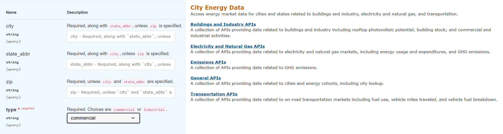
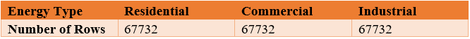

Data Collection
The data source is coming from the National Renewable Energy Laboratory (NREL). They focus on creative answers to today's energy challenges. From breakthroughs in fundamental science to new clean technologies to integrated energy systems that power our lives, NREL researchers are transforming the way the nation and the world use energy.
The data sets are focusing on the field of the usage amount of electricity and natural gas in cities of the USA. The City Energy Data APIs from NREL that are powerful and integrated API functions to obtain marketing energy data about electricity and natural gas. Access energy market data for cities and states related to buildings and industry, electricity and natural gas, and transportation. They can query energy data by zipcodes, city names and states.

Electricity and Natural Gas Dataset

For electricity and natural gas energy data, there are three classifications: residential, commercial, and industrial. These data are all necessary for this project. Because the goal of this project is to obtain a detailed view of how energy consumption occurs in most fields of our daily life. There are 24 attributes in all residential, commercial and industrial data:
- zip : the zip of the USA
- city: the city name of the USA
- housing_units: A housing unit is a house, an apartment, a group of rooms, or a single room occupied or intended for occupancy as separate living quarters.
- total_pop: total population of the city.
- commercial_num_establishments / industrial_num_establishments: the number of commercial establishments or industrial establishments.
- residential_elec_1kdollars / commercial_elec_1kdollars / industrial_elec_1kdollars: the expenditures of electricity, and the unit is 1k dollars.
- residential_elec_mwh / commercial_elec_mwh / industrial_elec_mwh: the usage of electricity, and the unit is megawatt hour.
- residential_gas_1kdollars / commercial_gas_1kdollars / industrial_gas_1kdollars: the expenditures of natural gas, and the unit is 1k dollars.
- residential_gas_mcf / commercial_gas_mcf / industrial_gas_mcf: the usage of natural gas, and the unit is 1 thousand cubic feet.
- residential_elec_lb_ghg / commercial_elec_lb_ghg / industrial_elec_lb_ghg: the greenhouse gas produced per megawatt hour electricity.
- residential_gas_lb_ghg / commercial_gas_lb_ghg / industrial_gas_lb_ghg: the greenhouse gas produced per thousand cubic feet gas.
Buildings and Industrial Dataset
For buildings and industrials data, there are two classifications: commercial buildings and industrials. These data are necessary for this project because the goal of this project is to obtain a detailed view of how energy consumption occurs in different Industry Classification System of North America. There are 18 attributes in both commercial buildings data and industrials data:
- zip : the zip of the USA
- city: the city name of the USA
- housing_units: A housing unit is a house, an apartment, a group of rooms, or a single room occupied or intended for occupancy as separate living quarters.
- total_pop: total population of the city.
- commercial_num_establishments / industrial_num_establishments: the number of commercial establishments or industrial establishments.
- residential_elec_1kdollars / commercial_elec_1kdollars / industrial_elec_1kdollars: the expenditures of electricity, and the unit is 1k dollars.
- residential_elec_mwh / commercial_elec_mwh / industrial_elec_mwh: the usage of electricity, and the unit is megawatt hour.
- residential_gas_1kdollars / commercial_gas_1kdollars / industrial_gas_1kdollars: the expenditures of natural gas, and the unit is 1k dollars.
- residential_gas_mcf / commercial_gas_mcf / industrial_gas_mcf: the usage of natural gas, and the unit is 1 thousand cubic feet.
- 1residential_elec_lb_ghg / commercial_elec_lb_ghg / industrial_elec_lb_ghg: the greenhouse gas produced per megawatt hour electricity.
- residential_gas_lb_ghg / commercial_gas_lb_ghg / industrial_gas_lb_ghg: the greenhouse gas produced per thousand cubic feet gas.
- rank_of_electricity_use_per_establishment: the rank of average electricity amount in this state
- natural_gas_users: Different kinds of business under NAICS 3 who use natural gas
- number_of_natural_gas_establishments: the number of business who uses natural gas
- natural_gas_use: the total used amount of natural gas
- rank_of_natural_gas_use: the rank of the use-natural-gas amount in this city
- natural_gas_use_per_establishment: the average natural gas amount
- rank_of_natural_gas_use_per_establishment: the rank of average natural gas amount in this state
Energy Usage and Expenditure Dataset
For energy usage and expenditure, this data set collects the annual consumption of electricity and gas in industrial, commercial and residential areas in various American cities, including the maximum, average and minimum energy consumption. These categories show the cities with the highest energy consumption and the factors accounting for the largest proportion of urban energy consumption. The main data attributes are:
- zip : the zip of the USA
- city: the city name of the USA
- commercial_electric_use(min/avg/max): The minimize/average/maximum value of commercial electric usage
- commercial_electric_expenditure(min/avg/max): The minimize/average/maximum value of commercial electric expenditure
- commercial_gas_use(min/avg/max): The minimize/average/maximum value of commercial gas usage
- commercial_gas_expenditure(min/avg/max):The minimize/average/maximum value of commercial gas expenditure
- industrial_electric_use(min/avg/max): The minimize/average/maximum value of industrial electric usage
- industrial_electric_expenditure(min/avg/max): The minimize/average/maximum value of industrial electric expenditure
- industrial_gas_use(min/avg/max): The minimize/average/maximum value of industrial gas usage
- industrial_gas_expenditure(min/avg/max): The minimize/average/maximum value of industrial gas expenditure
- residential_electric_use(min/avg/max): The minimize/average/maximum value of residential electric usage
- residential_electric_expenditure(min/avg/max): The minimize/average/maximum value of residential electric expenditure
- residential_gas_use(min/avg/max): The minimize/average/maximum value of residential gas usage
- residential_gas_expenditure(min/avg/max): The minimize/average/maximum value of residential gas expenditure
- city_fuel_use_diesel(min/avg/max): The minimize/average/maximum value of city diesel usage
- city_fuel_use_gas(min/avg/max): The minimize/average/maximum value of city gas usage
CO2 Emission Dataset
For carbon dioxide emissions, the data collected carbon emissions by U.S. states from 1980 to 2016; These data can help to analyze the trend of carbon emissions, and can obtain the relationship between energy consumption and carbon emissions. The main data attributes are:
- type: Resource type, such as industrial, commercial, residential, electric, transportation, total
- series_id: The identifier of the record
- name: The textual representation of the record
- Data from 1980 to 2016: The specific data of carbon dioxide emission from 1980 to 2016
Therefore, many statistical data can be gotten, such as the ranking of electricity expenditure per housing unit, electricity expenditure per capita, and greenhouse gas emissions. It is available to locate some cities where energy consumption is higher than others. There might be ought to strengthen measurements of saving energy. Besides, to predict the potential cities with high energy consumption and take measures to save energy is also meaningful. To predict, there should be more historic data to collect in different years to analyze the change tendency.
Besides, the error – “NOT FOUND” occurs when requesting json data using a zip code. Solution: detect the error code returned by the request, and save the data information in the csv files only when the errors are empty.
Sometimes, we cannot request json file. For some zip codes, it blocks or fails when I request the relevant json file. I set a conditional statement to ignore these special zip codes.
Final, the data is separated and wrangled to three main datasets and some minor datasets. The total usage amount of electricity and natural gas of each state is calculated so that that can more intuitively express the characteristics of our data.
Residential Dataset: Electricity and Natural Gas.
Commercial Dataset: Electricity and Natural Gas.
Industrial Dataset: Electricity and Natural Gas.
The data details are provided to access and download, please click the button below. More data information, please check the project GitHub.
Our Data